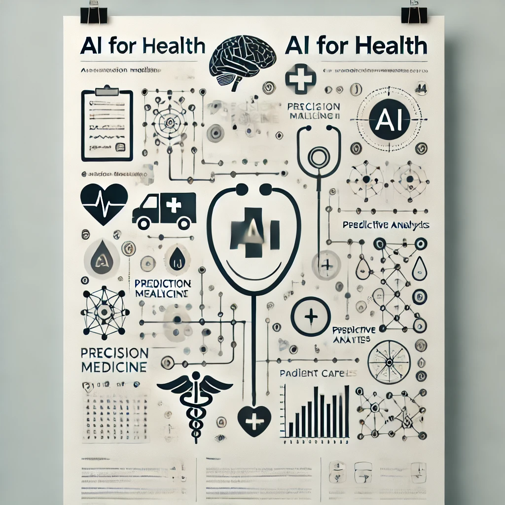

About me
My name is Aman BERHE, and I am a researcher in NLP for Health. Welcome to my page where you can learn more about my work and publications.
I grew up in Mekelle and completed my first bachelor's degree at Mekelle Institute of Technology (MIT) in the Department of Computer Science and Engineering. I enjoyed my time at MIT, especially the life I had with my friends.
I spent a few years as an Assistant Lecturer at Mekelle Institute of Technology, Mekelle University, and previously at Aksum University, teaching computer science until I left for France in 2015 to continue my studies.
I earned my master's degree in Machine Learning and Data Mining from the University of Jean-Monnet, Saint-Etienne, France. I had the opportunity to complete two research internships at prestigious French national research labs known as INRIA and CNRS.
Continuing my studies, I chose to pursue a PhD. Consequently, I completed my PhD in machine learning and NLP (AI) at the University of Paris-Saclay (Université Paris-Saclay) in the research center, CNRS, in the laboratory of LIMSI (now LISN).
My passion for AI, especially in NLP and ML, led me to undertake a PostDoc program at the research center IRD and the laboratory UMMISCO in collaboration with the company Quinten (a company that works in AI with applications in healthcare). I gained diverse experience that helped me propose practical solutions to real-world problems.
I have built various language models for different purposes. The first biomedical language model was I built was AliBERT, a French biomedical pretrained language model. I then used the model to propose solutions to different biomedical problems for various companies.
Additionally, I work on automating systematic literature reviews. Systematic reviews are a lengthy process mainly done by experts in the biomedical domain, making it a very expensive task. Automating this process saves both time and money.
Finally, I am deeply involved with LLMs, including using LLMs, fine-tuning, instruction tuning, and developing systems that utilize LLMs. I am cureently applying different models to different productions that can have a positive impact on companies and society in general. I am specifcally working on real-tme inputs and response, text, audio, and images
Researcher in NLP, LLMs, ML, and AI for Health
As a researcher in Natural Language Processing (NLP), Large Language Models (LLMs), Machine Learning (ML), and Artificial Intelligence (AI) for health, my passion lies at the intersection of cutting-edge technology and healthcare innovation. I am deeply committed to exploring how advanced computational techniques can revolutionize the medical field, particularly through the development and application of intelligent systems that improve patient outcomes and streamline healthcare processes.
Areas of Interest
Natural Language Processing (NLP)
Developing robust NLP models that can understand and generate human language with high accuracy.
Focusing on the intricacies of biomedical text to extract meaningful insights from vast amounts of medical literature, clinical notes, and patient records.
Developing resl-time response for real-time usages (e.g. Phone calls) in different domains. I am interested building products that makes life either and efficient
Large Language Models (LLMs)

Fine-tuning pre-trained LLMs for domain-specific tasks in healthcare, such as medical diagnostics, treatment recommendations, and patient interaction.
Investigating the ethical implications and ensuring the responsible use of LLMs in sensitive medical contexts.
Machine Learning (ML) and AI
Designing ML algorithms that can predict disease outcomes, identify potential health risks, and personalize treatment plans.
Leveraging AI to develop decision-support systems that assist healthcare professionals in making informed clinical decisions.
AI for Health
Utilizing AI to enhance the accuracy and efficiency of medical imaging, genomics, and other diagnostic tools.
Implementing AI-driven solutions to improve healthcare accessibility and reduce disparities in underserved populations.
My passion is driven by the belief that technology, when thoughtfully applied, has the potential to transform healthcare delivery and improve the quality of life for individuals worldwide. By bridging the gap between AI advancements and medical applications, I aim to contribute to a future where healthcare is more personalized, efficient, and equitable.
Projects
I have been part of different research and projects. Here are some of them.
Affiliation: IRD/UMMISCO, Quinten, Sorbonne University
Stage: Finished Successfuly!!
- AliBERT: First French biomedical pretrained language models. It has different versions and puposes
- ASLR: Automatic Systematic Literarture Reveiw (ASLR) is a sector where hundreds of millions. I have worked ASLR for microbiom bactria species. Currentl I am workin to make it work in all domains with my PhD student, Xue He
- Oncology: Building a model that understands strcutures medical reports for cancer patients. It helps doctors to orgonize and analyze report better
- Medical Coding Aligniment: Developing self-aligned models for better understanding and mapping of medical coding and medical concepts.
I also participate in projects and supervision of students in Mekelle Institute of Technology- Mekelle University (MIT-MU)
- NLP Workshop: We prepared workshops at MIT-MU, in which students and staff memebers participate to learn the most advanced NLP techiniques and models
- Advising and supervision of projects and students that focus in machine learning, NLP, LLMs, Medical Imaging, ets